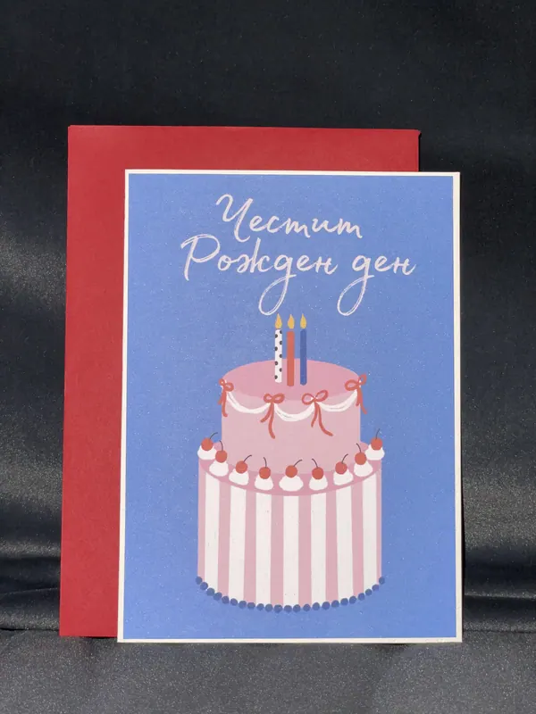

Внимание
Към човека, повода и всички онези подробности, които правят подаръка негов.
01 / ЧОВЕКЪТ ЗАД ДАР
Вярвам, че най-хубавият подарък започва с едно простичко „помислих за теб“.
А моят начин да го кажа е с хартия, цветове и две ръце, които все намират още един малък детайл за добавяне.
Малко от моята история
НЕЩО ЛИЧНО
Не за витрина. За близък човек.
Исках да подаря нещо, в което да има повече от красиво послание. Нещо с любим цвят, малък спомен и усещането, че е направено точно за този човек.
После дойде още един повод. Още една идея. И купчината хартия на масата постепенно се превърна в ДАР — място за картички, покани и подаръци, които разказват нечия история.
Днес отново започвам по същия начин: за кого е? Какво го радва? Кой малък детайл ще го накара да се усмихне?
С обич, Мила ♡МОЯТА МАЛКА ФИЛОСОФИЯ
„Не е нужно да е голямо.
Нужно е да е лично.“
КАКВО СТОИ ЗАД ВСЕКИ ДАР
Към човека, повода и всички онези подробности, които правят подаръка негов.
Към новите цветови съчетания, текстури и идеи, които идват от един разговор.
Ръчно подредени детайли и малки разлики, които правят всяка изработка своя.
НЕКА НАПРАВИМ НЕЩО ЛИЧНО